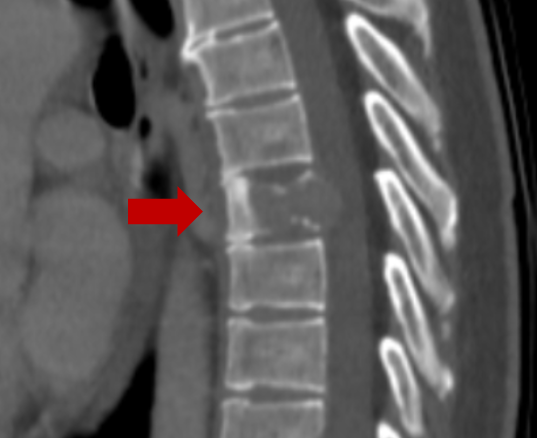

Опухоли позвоночника могут возникать из любой из структур спинного мозга или позвоночного столба. Они могут возникать в шейной (шея), грудной (середина спины) или пояснично-крестцовой (нижняя часть спины) областях. Они могут возникать в самом спинном мозге, нервах, оболочках, но чаще всего в самих позвонках. Опухоли могут быть первичного происхождения в позвоночнике или метастатические - происходящие в другом месте (т.е., легкие, грудь и т.д.).

Какие симптомы опухоли позвоночника?
Боль в шее или спине - распространенные симптомы опухолей позвоночника. Боль часто присутствует ночью и усугубляется физической активностью. Симптомы, связанные с опухолями позвоночника, также могут варьироваться в зависимости от уровня. Опухоли шейного отдела могут вызывать слабость или онемение рук или ног. Опухоли грудного отдела и пояснично-крестцового отдела могут вызывать слабость или онемение в области грудной клетки или ног. Трудность при ходьбе также иногда является симптомом.
indiasurgerytour.com
Какие существуют медицинские/медикаментозные (нехирургические) методы лечения опухолей позвоночника?
Нехирургические методы лечения опухолей позвоночника включают в себя наблюдение, химиотерапию и лучевую терапию. Некоторые опухоли, которые не вызывают серьезных симптомов и не выглядят агрессивными в своем поведении, могут наблюдаться и сопровождаться серийной визуализацией (обычно МРТ). Кроме того, некоторые типы опухолей чувствительны к химиотерапии и/или лучевой терапии. Курс химио- или лучевой терапии в этих случаях может быть первым этапом лечения.
Когда необходима операция при опухолях позвоночника?
Хирургическое лечение опухоли позвоночника обычно показано при прогрессирующей двигательной слабости или потере контроля над кишечником или мочевым пузырем. Кроме того, операция может потребоваться в ситуациях, когда позвоночник стал нестабильным из-за опухоли. Наконец, операция может быть единственным доступным вмешательством при некоторых опухолях, нечувствительных к облучению или химиотерапии.
Какие существуют варианты хирургического вмешательства при опухолях позвоночника?
Хирургические варианты лечения опухолей позвоночника варьируются от полного до частичного удаления. В ходе операции ваш хирург сравнит риски хирургического удаления с другими доступными вариантами лечения.
tass.ru
Хирургическая стабилизация позвоночника может потребоваться для устранения нестабильности, вызванной самой опухолью или операцией по ее удалению. Операция может быть проведена путем переднего или заднего доступа к позвоночнику. Вмешательство может включать в себя доступ через область шеи, грудной клетки или забрюшинного пространства.
Типичное пребывание в больнице после операции по удалению опухоли позвоночника составляет 1-2 недели. После операции может потребоваться период реабилитации. Для этого требуется пребывание в специализированном реабилитационном стационаре.
В зависимости от сложности операции общее время восстановления после операции может составлять до трех месяцев или до года. Большинство пациентов будут чувствовать себя близко к нормальному состоянию к 3-4 месяцам после операции. Однако процесс выздоровления продолжается в течение нескольких месяцев после операции и может продолжаться до года и более.
Каковы долгосрочные последствия?
Ваш врач будет следить за вами в течение определенного периода времени, чтобы выявить любые признаки рецидива опухоли. Обычно это делается с помощью периодических снимков (МРТ или КТ). Вероятность рецидива опухоли зависит от типа опухоли и от того, распространилась ли она из других частей тела или нет.